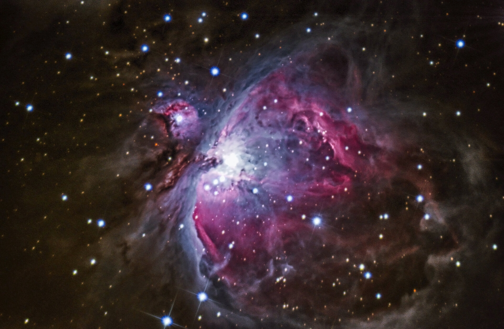

L'astrophotographie, souvent appelée simplement astrophoto (AP), est une discipline de l'astronomie et de la photographie qui consiste à photographier des objets célestes.
La première photographie connue de la Lune date des années 1840. Il faut toutefois attendre la fin du xixe siècle pour que les développements des techniques photographiques permettent les photographies d'étoiles.
Outre les planètes et les étoiles proches, l'astrophotographie permet d'obtenir des images d'objets peu ou pas visible à l’œil nu du fait de leur faible magnitude : étoiles peu lumineuses, nébuleuses ou galaxies. De telles photographies nécessitent de longs temps d'exposition, ce qui permet à la surface sensible (film ou capteur) d'accumuler les photons durant une longue période.
L'astrophotographie a révolutionné l'astronomie en permettant de cataloguer des centaines de milliers de nouvelles étoiles invisibles à l’œil nu. Dès les années 1920, la construction de télescopes toujours plus grands et plus puissants a permis de s'en servir comme d'objectifs surdimensionnés à la prise de vue sur plaque photographiques. Au fil du temps, la photographie en lumière visible a laissé la place à des appareils de mesures de plus en plus perfectionnés munis de spectroscopes ciblant des longueurs d'onde allant des ondes radio aux rayons gamma1.
L'astrophotographie reste une discipline populaire chez les astronomes amateurs dont les photographies ont souvent un but esthétique plutôt que scientifique.
 Retour à la page d'accueil